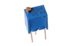
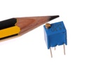
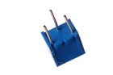

14 mm 200k Ohm Potentiometer Side Adjust - PT4204S

Summary
Name: 14 mm 200k Ohm Potentiometer Side Adjust
ID: POTE-14-X-O204-68
Hex ID: PT4204S
WebPage: https://github.com/oomlout/oomlout-OOMP/wiki/POTE-14-X-O204-68
Short URL: http://oom.lt/PT4204S
Revision History: https://github.com/oomlout/oomlout-OOMP/blob/master/parts/POTE-14-X-O204-68/
| Type |
Size |
Color |
Description |
Index |
POTE
Potentiometer |
14
14 mm |
X
|
O204
200k Ohm |
68
Side Adjust |
Images



About
This part is awaiting a description.
Specifications
| Info |
Value |
| Type |
Potentiometer |
| Size |
14 mm |
| Description |
200k Ohm |
| Index |
Side Adjust |
Extra Details
Spotted a mistake, want to add more? Let us know oomp@oomlout.com
All images and resources are licensed [CC BY-SA] unless otherwise stated (ie. the datasheets)